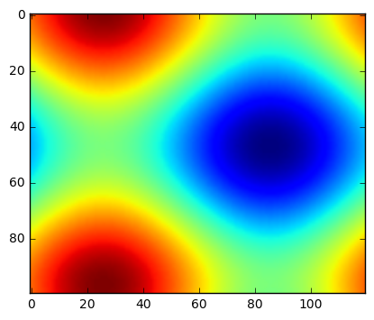

Make Jupyter Notebook your powerful studying assistant, as well as a blogging secretary who does everything for you! Use Hexo and Jupyter notebook to blog, especially for academic posts.
Table of Contents
- Introduction
- Conditional Expectation by Optimization
- Conditional Expectation Using Direct Integration
- Summary
- 中文模式
Introduction
If you are a student in statistics or computer science, you may be fascinated by the elegance and efficiency of Jupyter Notebook. Meanwhile many of us would like to blogger using markdown in some static web blog framework like Hexo and Jekyll. Why do not make notebook output files our everyday posts? Sounds great, since we can record much more interesting things!
We know that thanks to nbconvert, a utility provided by Jupyter community which can be used directly as a command line tool, we can convert ipynb files mainly into html, tex, md(GFM) and PDF format. Which choice should be the fastest one, given the situation where ipynb output is an embedded element in a blog post container?
Well that is really hard to say since there have been already some solutions on the Web for different output formats, which you can refer to at the end of this post. However, not every solution is there for your needs and it is so hard to satisfy someone to the maximum extent that he or she is obliged to do some extra efforts to make his blog really a honey one, JUST LIKE ME :)
My choice: Copy-paste md version directly into post, for this is the most flexible and convenient way, highly compatible with the post container in terms of rendering style. Besides, its file size is much smaller than that of html output generated in full template.
My problem: GFM renderer of Hexo-Next theme is not friendly with math tex commands, formulas often cannot be properly rendered by Mathjax because GFM renderer gets confused with some special symbols like \\, \_ and \[ – It does not know that characters between dollar pairs are mathematical formulas! Note that Jupyter notebook markdown renderer deals pretty well with math formulas, so I do not want add manually escape characters one by one for blog posts!
My solution: Inspired by Hexo doc, I write a tiny regular expression gist to automatically wrap math formulas with raw tag so that GFM renderer will not show interest in these guys.
The notebook you are reading now is exactly first written in Jupyter and then posted inside my blog. Thanks to the nbviewer service, you may read the online-distributed version in original html format, and download the ipynb file if you would like to.
In a word,
$$What\ you \ see \buildrel \rm def \over {:=} A \ blog \ post \buildrel \rm generate \over \longleftarrow A \ Jupyter \ Notebook \nonumber$$Conditional Expectation by Optimization
Now, let us consider the important case of the zero-mean bivariate Gaussian and try to find a function $h$ that minimizes the mean squared error (MSE). Again, trying to solve for the conditional expectation by minimizing the error over all possible functions $h$ is generally very, very hard. One alternative is to use parameters for the $h$ function and then just optimize over those. For example, we could assume that $h(Y)= \alpha Y$ and then use calculus to find the $\alpha$ parameter.
Let us try this with the zero-mean bivariate Gaussian density,
$$\mathbb{E}((X-\alpha Y )^2) = \mathbb{E}(\alpha^2 Y^2 - 2 \alpha X Y + X^2 )$$and then differentiate this with respect to $\alpha$ to obtain
$$\mathbb{E}(2 \alpha Y^2 - 2 X Y ) = 2 \alpha \sigma_y^2 - 2 \mathbb{E}(XY) = 0$$Then, solving for $\alpha$ gives us
$$\alpha = \frac{ \mathbb{E}(X Y)}{ \sigma_y^2 }$$which means we have
$$\mathbb{ E}(X|Y) \approx \alpha Y = \frac{ \mathbb{E}(X Y )}{ \sigma_Y^2 } Y =\frac{\sigma_{X Y}}{ \sigma_Y^2 } Y$$where that last equality is just notation. Remember here we assumed a special linear form for $h=\alpha Y$, but we did that for convenience. We still do not know whether or not this is the one true $h_{opt}$ that minimizes the MSE for all such functions.
Conditional Expectation Using Direct Integration
Now, let us try this again by computing $\mathbb{E}(X|Y)$ in the case of the bivariate Gaussian distribution straight from the definition.
$$\mathbb{E}(X|Y) = \int_{\mathbb{ R}} x \frac{f_{X,Y}(x,y)}{f_Y(y)} dx$$where
$$ f_{X,Y}(x,y) = \frac{1}{2\pi |\mathbf{R}|^{\frac{1}{2}}} e^{-\frac{1}{2} \mathbf{v}^T \mathbf{R}^{-1} \mathbf{v} }$$and where
$$\mathbf{v}= \left[ x,y \right]^T$$ $$\mathbf{R} = \left[\begin{array}{cc} \sigma_{x}^2 & \sigma_{xy} \\\\ \sigma_{xy} & \sigma_{y}^2 \\\\ \end{array} \right]$$and with
$$\begin{eqnarray} \sigma_{xy} &=& \mathbb{E}(xy) \nonumber \\\\ \sigma_{x}^2 &=& \mathbb{E}(x^2) \nonumber \\\\ \sigma_{y}^2 &=& \mathbb{E}(y^2) \end{eqnarray}$$This conditional expectation (Eq. 4 above) is a tough integral to evaluate, so we will do it with sympy.
|
|
Unfortunately, sympy cannot immediately integrate this without some hints. So, we need to define a positive variable ($u$) and substitute it into the integration
|
|
sigma_xy*y/sigma_y**2
Thus, by direct integration using sympy, we found
and this matches the prior result we obtained by direct minimization by assuming that $\mathbb{E}(X|Y) = \alpha Y$ and then solving for the optimal $\alpha$!
The importance of this result cannot be understated: the one true and optimal $h_{opt}$ is a linear function of $Y$.
In other words, assuming a linear function, which made the direct search for an optimal $h(Y)$ merely convenient yields the optimal result! This is a general result that extends for all Gaussian problems. The link between linear functions and optimal estimation of Gaussian random variables is the most fundamental result in statistical signal processing! This fact is exploited in everything from optimal filter design to adaptive signal processing.
We can easily extend this result to non-zero mean problems by inserting the means in the right places as follows:
$$\mathbb{ E}(X|Y) = \bar{X} + (Y-\bar{Y}) \frac{\sigma_{xy}}{\sigma_{y}^{2}}$$where $\bar{X}$ is the mean of $X$ (same for $Y$).
Summary
In this section, we showed that the conditional expectation for Gaussian random variables is a linear function, which, by a bizarre coincidence, is also the easiest one to work with. This result is fundamental to all optimal linear filtering problems (e.g. Kalman filter) and is the basis of most of the theory of stochastic processes used in signal processing. Up to this point, we have worked hard to illustrate all of the concepts we will need to unify our understanding of this entire field and figured out multiple approaches to these kinds of problems, most of which are far more difficult to compute. Thus, it is indeed just plain lucky that the most powerful distribution is the easiest to compute as a conditional expectation because it is a linear function. We will come back to this same result again and again as we work our way through these greater concepts.
中文模式
下面看看中英文混合的效果如何。
我们可以自由地写行内公式，如 $\cos 2\theta = \cos^2 \theta - \sin^2 \theta = 2 \cos^2 \theta - 1$。 We can display an inline formula, like $\sum_{i=0}^n i^2 = \frac{(n^2+n)(2n+1)}{6}$, very simple!
我们也可以写行间公式，如：
$$ \begin{equation} \frac{\partial u}{\partial t} = h^2 \left( \frac{\partial^2 u}{\partial x^2} + \frac{\partial^2 u}{\partial y^2} + \frac{\partial^2 u}{\partial z^2}\right) \label{eq:sample} \end{equation} $$We can display formulas as blocks as followings:
$$ \left\{ \begin{aligned} \dot{x} & = \sigma(y-x) \\[2ex] \dot{y} & = \rho x - y - xz \\[2ex] \dot{z} & = -\beta z + xy \end{aligned} \right. $$We can highlight equation by adding both border and background:
$$ \bbox[yellow,5px,border:2px solid red] { e^x=\lim_{n\to\infty} \left( 1+\frac{x}{n} \right)^n } $$下面是一个矩阵：
$$ \begin{pmatrix} 1 & a_1 & a_1^2 & \cdots & a_1^n \\\ 1 & a_2 & a_2^2 & \cdots & a_2^n \\\ \vdots & \vdots & \vdots & \ddots & \vdots \\\ 1 & a_m & a_m^2 & \cdots & a_m^n \\\ \end{pmatrix} \nonumber $$这是一个数组：
$$\begin{array}{c|lcr}value & \text{0} & \text{1} & \text{2} \\ \hline 0 & 0.24 & 1 & 125 \\ 1 & -1 & 189 & -8 \\ 2 & -20 & 2000 & 1+10i \end{array} \nonumber$$我们可以引用公式$\eqref{eq:sample}$, 以下书写形式也很常用：
$$\operatorname*{Res}_{z=1}\left(\frac1{z^2-z}\right)=1$$ $$\dbinom{n}{r}=\binom{n}{n-r}=C^n_r=C^n_{n-r}$$ $$J_{\alpha}(x)=\sum_{m=0}^{\infty}\frac{(-1)^{m}}{m!\Gamma(m+\alpha+1)}(\frac{x}{2})^{2m+\alpha}$$ $$ i\hbar\frac{\partial \psi}{\partial t} = \frac{-\hbar^2}{2m} \left(\frac{\partial^2}{\partial x^2} + \frac{\partial^2}{\partial y^2} + \frac{\partial^2}{\partial z^2} \right) \psi + V \psi$$
|
|

References
Supported output formats by nbconvert
MathJax TeX and LaTeX Support
Add latex support to your hexo theme
Nikola + nbconvert realized on Damian blog
@jakevdp uses Pelican and Jupyter Notebook to blog
An IPython extension to clean, build and deploy your Nikola
HTML Imports: include for the web